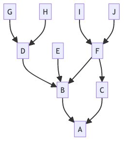

流畅的Git
Git可视化实践交流
忻斌健
智能系统前沿开发
2023年09月18日
Table of Contents
常见场景

关于“git submodule for each”一个例子
台盆命令
查手册：
git submodule foreach --recursive 'git log'
debugged:
git submodule foreach --recursive 'git log --oneline'
更多功能：
git submodule foreach --recursive 'git log --oneline HEAD...HEAD~5'
水管命令
- stack overflow:
git submodule foreach --recursive '
REV1=HEAD;
REV2=HEAD~10;
SHA1=$(cd $toplevel && git ls-tree $REV1 $sm_path | \
grep -E -o "[0-9a-f]{40}");
SHA2=$(cd $toplevel && git ls-tree $REV2 $sm_path | \
grep -E -o "[0-9a-f]{40}");
git log --oneline $SHA1...$SHA2'
- debug:
git submodule foreach --recursive '
SHA1=$(cd $toplevel && cd $sm_path && git log | \
grep -E -o "[0-9a-f]{40}" | head -1);
SHA2=$(cd $toplevel && cd $sm_path && git log | \
grep -E -o "[0-9a-f]{40}" | head -10 | tail -n1);
git log --oneline $SHA1...$SHA2'
台盆命令:
- git commandline
- git lens
- gitkraken
- emacs magit
哈希值，四类对象
哈希(暗物质)
- 高效
- 哈希函数计算, 每百万次计算约几百毫秒
- 索引~O(1) (数组 O(N)）
- 哈希冲突概率极低，最坏 O(N)
- sha-1 (20byte, 40hex, 160 位, 8 位 用于目录)
- 安全性 -> sha256(32bit), sha512(64bit), ipv6 多 42 亿倍
- ipv6 128bit \(2^{128}\) 79x1027 （宇宙总原子数 wiki \(\approx10^{80}\), 人体原子数\(\approx7*10^{27}\), 恒星数量 \(\approx200\times10^{21}\))
- 哈希表的广泛应用
- 编程语言的数据结构：Python dict (json) 与 set， (不算 list 与 tuple)
- 数据库：Mongodb object
- 云存储：Object Storage System
四个对象
- tree 树 (空间/拓扑关系)
- blob 文件
- commit (时间顺序)
- annotated tag
- 树对象,文件对象 的实例：HEAD,
- git cat-file -p HEAD
- git ls-tree -r HEAD
- head 内一个文件对象
抽象的力量
- 内容可编址的文件系统/数据库
- 所有对象平等, 不分优先级
版本选择 gitrevisions
- 应用于 cherry-pick, reset, log, merge
- 特定单个版本
- head^^/head^2
- head@{2}
- head~~/head~2
版本的范围
- master..experiment (from master to experiment)
- D, C
- master A ^experiment (from experiment to master or feature)
- F, E
- master…experiment (from master to experiment or vice versa)
- F,E,D,C
- @ : HEAD

版本关系语法

Figure 1: 多分支的版本历史
| A | A^0 | |||
| B | A^ | A^1 | A~1 | |
| C | A^2 | |||
| D | A^^ | A^1^1 | A~2 | B^1 |
| E | B^2 | A^^2 | ||
| F | B^3 | A^^3 | ||
| G | A^^^ | A^1^1^1 | A~3 | D^1 |
| H | D^2 | B^^2 | A^^^2 | A~2^2 |
| I | F^ | B^3^ | A^^3^ | |
| J | F^2 | B^3^2 | A^^3^2 |
范围选择的语法 1
Figure 2: 多分支的版本历史
版本范围语法
| 输入 | 分解 | 结果 |
|---|---|---|
| D | G H D | |
| D F | G H I J D F | |
| ^G D | H D | |
| ^D B | E I J F B | |
| ^D B C | E I J F B C | |
| C | I J F C | |
| B..C | ^B C | C |
范围选择的语法 2
Figure 3: 多分支的版本历史
| B…C | B ^F C | G H D E B C |
| B^- (merge) | B^..B | |
| ^B^1 B | E I J F B | |
| C^@ | C^1, F | I J F |
| C^! | C ^C^@, C ^F | C |
| F^! D | F ^I ^J D | G H D F |
典型场景中的工具和操作
模拟场景 (后悔药)
- 在已有代码仓库开创一个特征分支
- 增加变更 (git add)
- 提交变更 (git commit)
- 撤回最近提交变更 (git commit，马上反悔)
- 撤回一长串变更 (在一个分支上多次提交以后反悔，reset)
- 撤回远程仓库(git push 给所有人后反悔)
- 变更整个分支 (git rebase)
- 在错误分支上提交变更（把相关变更推到正确分支上，cherrypick）
- 头脑风暴!
常规应用命令
- git branch (off, out)
- 添加变更
- git commit -a
- 提交变更: 反悔最近变更, git push -f 选项.
- git reset
- soft, mixed, hard 如果 hard 更干净，为何 mixed 是默认选项？
- hard 很危险 (detached/isolated commit,没有后悔药!)
- soft, mixed 更保守，防卫性回退
- git remote
- 可以对应多个远端仓库？ 比如 ros 的 github 仓库和公司内网有特殊配置的仓库
复杂命令
- git rebase
- git push –force （没有后悔药!)
- git merge
git reflog 的视角
- 头部分支的历史 (head & branches)